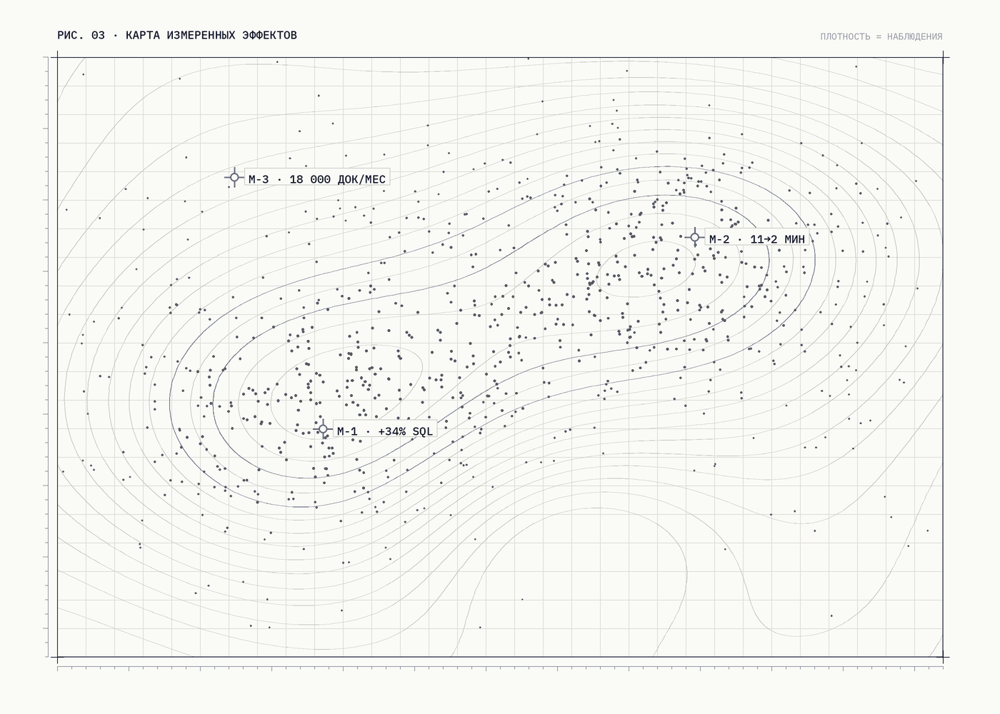
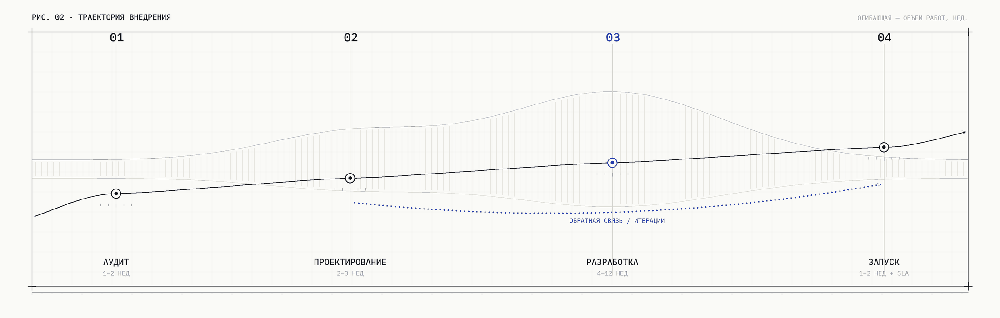

01
AI-ассистенты и корпоративные помощники
RAG-боты со знанием вашего продукта и регламентов. Отвечают клиентам и сотрудникам со ссылками на источники.
00 / Betaline AI
LLM-СИСТЕМЫ ПОД КЛЮЧ · РФ
Проектируем и внедряем LLM-системы: ассистенты, агентные системы, обработка документов и аналитика — весь цикл внутри одной команды.

01 / Услуги
01
RAG-боты со знанием вашего продукта и регламентов. Отвечают клиентам и сотрудникам со ссылками на источники.
02
Агенты с инструментами, которые действуют сами: ставят задачи, пишут письма, обновляют данные в системах.
03
Извлечение данных, классификация и сверка первички без ручного ввода — с записью в учётные системы.
04
Прогноз спроса, скоринг лидов, объяснимые модели — решения, которые показывают, почему они так считают.
05
Карта AI-возможностей вашего бизнеса, дорожная карта внедрения и честная оценка ROI до старта разработки.
02 / Кейсы
Ассистент квалифицирует входящие лиды прямо в AmoCRM: задаёт уточняющие вопросы, сегментирует и передаёт менеджеру только готовых к разговору клиентов.
+34 %
SQL — квалифицированных лидов
Две трети обращений закрываются без оператора: ассистент отвечает по базе знаний со ссылками на источники, сложные случаи передаёт человеку.
11 → 2 мин
время ответа · 2/3 без оператора
Счета, УПД и транспортные накладные распознаются, сверяются и попадают в учётную систему без участия операторов.
18 000
документов в месяц без ручного ввода

03 / Почему мы
03.1
От аудита до сопровождения — без субподряда. Аналитики, ML-инженеры и разработчики сидят в одной команде и отвечают за результат вместе.
03.2
Оценка качества ответов, логирование, автотесты и мониторинг — а не «промпт и молитва». Каждый релиз проверяется на эталонных наборах.
03.3
Работаем в контуре заказчика, подписываем NDA, разворачиваем изолированные базы знаний — RAG on-premise, когда данные не должны покидать периметр.
04 / Технологии
05 / Процесс

01
1–2 недели
Погружаемся в процессы, находим точки применения AI и считаем ожидаемый эффект.
02
2–3 недели
Архитектура решения, источники данных, метрики качества и план интеграций.
03
4–12 недель
Итерации с регулярными демо: система растёт на ваших данных и ваших сценариях.
04
1–2 недели + сопровождение
Внедрение в контур, обучение команды, мониторинг и план развития системы.
06 / Цены
Каждый проект начинается с вводного разговора: смотрим на процессы и честно говорим, где AI окупится, а где — нет.
Точка входа
Разбираем ваши процессы и показываем, что можно автоматизировать уже сейчас.
0 ₽бесплатно · без обязательств
Записаться →Полный аудит
от150 000 ₽
Пилот
от600 000 ₽
Пилот
от700 000 ₽
Пилот
от800 000 ₽
Пилот
от1 000 000 ₽
Включено во все решения
07 / Контакт
Расскажите о задаче — вернёмся в течение рабочего дня и предложим время для 30-минутного разговора с инженером, а не менеджером по продажам.
Заявка № принята
Вернёмся в течение рабочего дня и предложим время для вводного аудита — или напишите на info@betaline.ai.